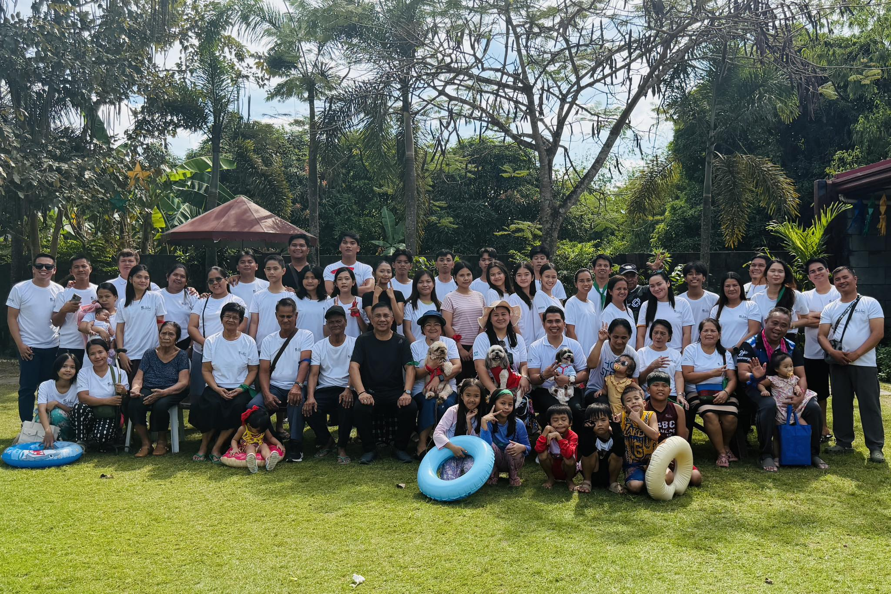
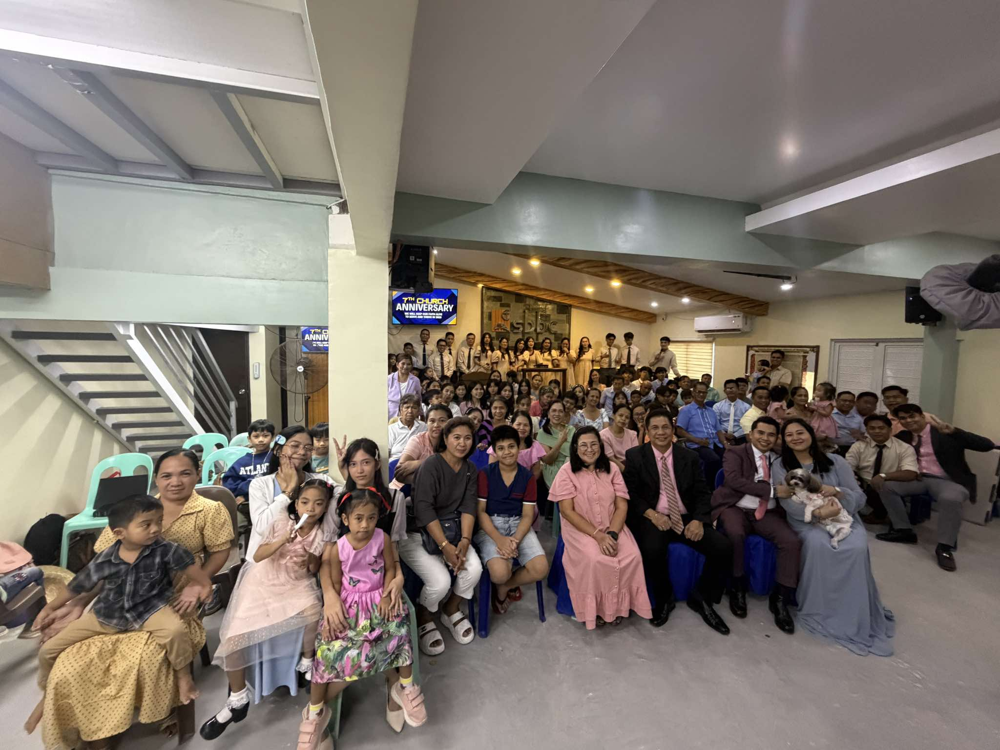
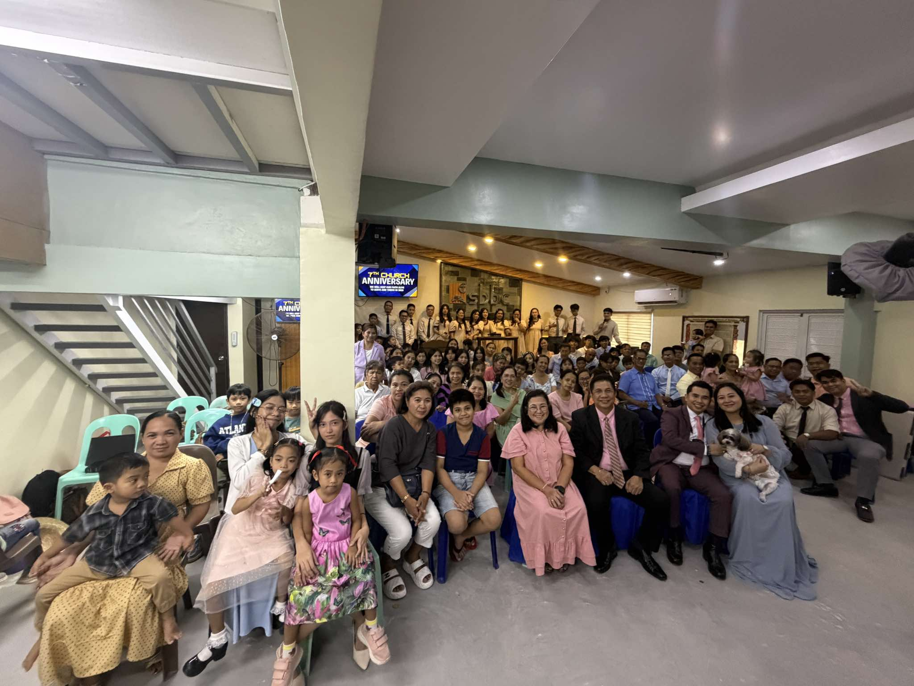
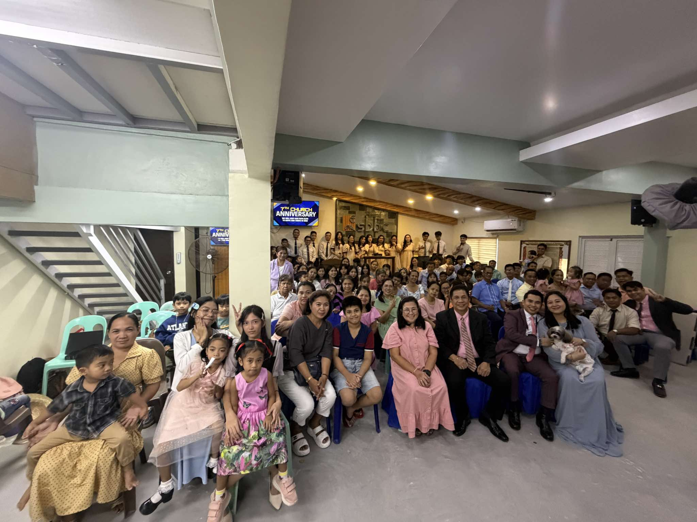
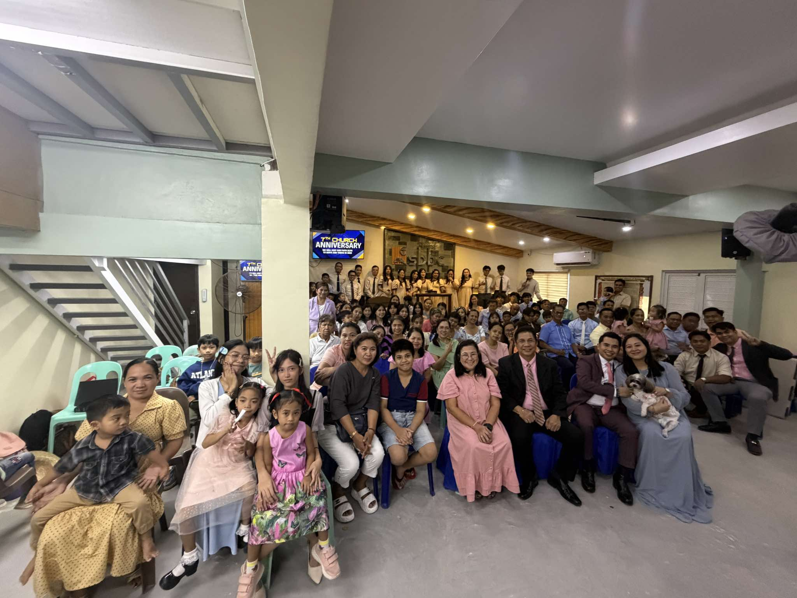

 


City of Malolos, Bulacan
Our beloved Pastor Joseph A. Santos
Church history is the story of God's work through His people across time. From the early church in Jerusalem, where the apostles boldly shared the gospel, to the spread of Christianity across continents, the church has been a living witness to God’s love, faithfulness, and guidance. We see in history both triumphs and struggles—times of revival and growth, as well as periods of persecution and division. These events remind us that the church is made up of imperfect people, yet God’s plan moves forward through His Spirit. Figures like Augustine, Martin Luther, and Mother Teresa show us how God calls individuals to serve in unique ways, shaping the church and the world around them.

You can read this in PDF form, Click the card to open the file
1: Sal-En Declaration
4-6: Mission Conference @Pasay
13: Ladies' Fellowship
18-20: Cheerful Giving Conference
21: Prayer Vigil
22: Cheerful Giving Sunday
27: Men's Fellowship
13: Ladies Fellowship
20: Men's Fellowship
26-27: Missions Conference
29: Missions Sunday
3: Siete Palabra
4: Beloved Pastor Joseph's Birthday
5: Pastor Joseph & Wife Wedding Anniversary
26: Pastor's Appreciation Sunday